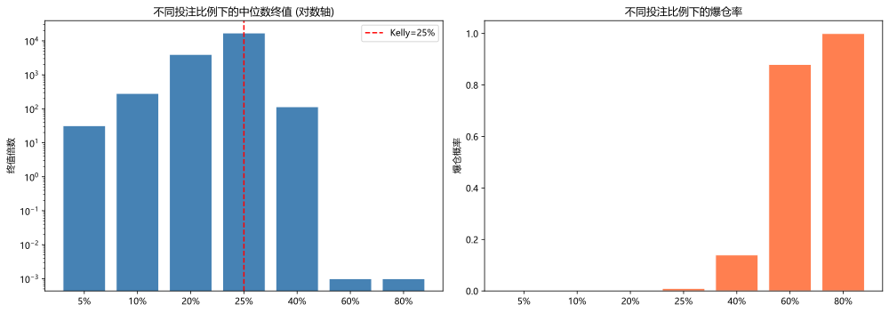

主题切换
1.3 量化思维核心
概念详解
从概率视角看世界
量化交易的本质是寻找正的期望值。大数定律确保长期收敛。与传统交易依赖直觉和市场感觉不同，量化思维要求每一个决策都必须有数据和概率的支撑。
量化思维的核心可以用一句话概括：不要预测每一次交易的结果，而是构建一个在大量重复中必然盈利的系统。
名词解释：期望值
在大量重复试验中，每次试验结果的平均值。公式为 (胜率×平均盈利) - (败率×平均亏损)。
名词解释：大数定律
当试验次数趋于无穷时，样本均值趋于总体均值的统计规律。在交易中，足够的交易次数是策略收益收敛到期望值的必要条件。
名词解释：幸存者偏差
只关注成功案例而忽略失败案例的系统性错误。在量化中，如果仅回测最终存活的股票（忽略了退市的），会高估策略表现。
量化思维的三大支柱
1. 假设检验思维
量化研究本质上是一个持续假设检验的过程：
- H0（原假设）：观测到的规律是随机的，不存在可盈利的模式
- H1（备择假设）：观测到的规律是真实的，存在超额收益机会
- 量化研究的任务：用统计检验拒绝H0，用样本外数据验证H1
每一步都要问自己：这个结果的p值是多少？是数据挖掘还是真实规律？
2. 贝叶斯更新思维
量化研究者应当像贝叶斯更新那样持续修正信念：
P(策略有效 | 回测通过) = P(回测通过 | 策略有效) * P(策略有效) / P(回测通过)
- 先验概率 P(策略有效)：我们的初始信念，通常很低（绝大多数"灵光一闪"都是噪声）
- 似然 P(回测通过 | 策略有效)：策略如果真的有效，回测通过的概率
- 证据 P(回测通过)：在所有情况下回测通过的总概率（包括策略无效但运气好的情况）
- 后验概率 P(策略有效 | 回测通过)：在看到回测结果后，策略真正有效的概率
3. 系统化思维
量化交易不是"找到好策略就行了"，而是构建一个完整的决策系统：
- 信号生成 → 组合优化 → 交易执行 → 风险监控 → 绩效归因
- 每个环节都是系统的一部分，任何一个环节的薄弱都会导致整体失效
- 系统必须可重复、可验证、可审计
数学原理
期望值的精确计算与凯利准则
交易策略的期望值：
E[R] = (胜率 × 平均盈利) - (败率 × 平均亏损)
更进一步的凯利准则（Kelly Criterion）告诉我们每次应该下注的比例：
f^* = p - \frac{q}{b}
其中：
是最优投资比例 是胜率 是败率 是盈亏比（盈利金额 / 亏损金额）
实例：一个胜率60%、盈亏比2:1的策略，凯利比例为：
这意味着最优赌注是总资金的40%。但在实践中，由于参数估计的不确定性，通常使用半凯利（half-Kelly，即20%）或更保守的比例。
夏普比率及其陷阱
夏普比率的定义：
SR = \frac{E[R - R_f]}{\sigma_R}
虽然是行业标准，但夏普比率有几个致命缺陷：
- 不区分上行波动和下行波动（Sortino比率修正了这一点）
- 对收益率分布的非正态性不敏感
- 容易被短期极端收益"美化"
多重假设检验校正
量化研究最大的陷阱之一是数据窥探偏差（Data Snooping）。当你测试了100个因子，即使全是噪声，也有大约5个会"看起来显著"（α=0.05）。
Bonferroni校正将显著性阈值从0.05调整为：
\alpha_{adjusted} = \frac{0.05}{N_{tests}}
此外还有更强大的方法如Benjamini-Hochberg FDR控制：
- 将所有p值升序排列：
- 找到最大的
满足： （q为期望FDR水平，通常设为0.05） - 拒绝前k个假设
Python实战
案例1：Bootstrap检验
此处有展示代码展开 ▼
python
import numpy as np
returns = np.random.randn(500) * 0.01 + 0.0005
original_sharpe = np.mean(returns) / np.std(returns) * np.sqrt(252)
# H0: Sharpe=0 → 将收益率中心化消除样本均值
centered = returns - np.mean(returns)
bootstrapped = [np.mean(np.random.choice(centered, size=500)) / np.std(np.random.choice(centered, size=500)) * np.sqrt(252) for _ in range(1000)]
p_value = np.mean(np.array(bootstrapped) >= original_sharpe)
print(f"原始夏普比率: {original_sharpe:.3f}")
print(f"Bootstrap p值: {p_value:.3f}")点击展开可浏览运行结果
原始夏普比率: 0.247 Bootstrap p值: 0.336
案例2：凯利准则的模拟验证
此处有展示代码展开 ▼
python
import numpy as np
import matplotlib.pyplot as plt
def simulate_kelly(win_rate=0.55, win_loss_ratio=1.5, n_trades=200, n_paths=100, fractions=[0.05, 0.1, 0.2, 0.25, 0.4, 0.6, 0.8]):
"""
模拟不同投注比例下的资金增长轨迹
注意: n_trades=200 —— 复利下 1000 笔会让终值爆炸到 1e19 量级,
既不可读也不现实(实盘很少连续同参数交易 1000 次), 200 笔足以看出拐点。
"""
results = {}
for f in fractions:
all_paths = []
for path in range(n_paths):
capital = 1.0
for _ in range(n_trades):
if np.random.random() < win_rate:
# 盈利
capital *= (1 + f * win_loss_ratio)
else:
# 亏损
capital *= (1 - f * 1.0) # 亏损100%的投入
if capital < 0.001: # 爆仓
capital = 0.001
break
all_paths.append(capital)
results[f] = {
'median': np.median(all_paths),
'mean': np.mean(all_paths),
'p5': np.percentile(all_paths, 5),
'p95': np.percentile(all_paths, 95),
'bankruptcy_rate': np.mean(np.array(all_paths) < 0.01)
}
return results
# 计算理论凯利比例
kelly_f = round(0.55 - (1 - 0.55) / 1.5, 2) # = 0.25
print(f"理论凯利比例: {kelly_f:.2%}")
# 大数用科学计数法, 触及爆仓地板的用 <0.01
def fmt(x):
if x < 0.01:
return "<0.01"
return f"{x:.2e}" if x >= 1e5 else f"{x:.1f}"
# 模拟验证
n_trades = 200
results = simulate_kelly(n_trades=n_trades)
print(f"\n{'比例':>6} {'中位数':>10} {'均值':>10} {'单笔g':>8} {'爆仓率':>8}")
print("-" * 46)
for f, stats in results.items():
# g = 每笔的几何增长率, 可跨 n_trades 比较的"真实速度";
# 均值被少数暴富路径拉高, 中位数才是典型路径的真实体验
g = f"{stats['median'] ** (1 / n_trades) - 1:>8.2%}" if stats['median'] >= 0.01 else " 爆仓"
tag = " <- Kelly" if abs(f - kelly_f) < 1e-9 else ""
print(f"{f:>6.0%} {fmt(stats['median']):>10} {fmt(stats['mean']):>10} "
f"{g} {stats['bankruptcy_rate']:>8.1%}{tag}")
# 绘制终端资金分布
fig, axes = plt.subplots(1, 2, figsize=(14, 5))
fractions = list(results.keys())
medians = [r['median'] for r in results.values()]
bankruptcies = [r['bankruptcy_rate'] for r in results.values()]
axes[0].bar([f'{f:.0%}' for f in fractions], medians, color='steelblue', edgecolor='white')
axes[0].set_yscale('log') # 各比例终值相差数个量级, 线性轴会挤成一片
axes[0].axvline(x=list(fractions).index(kelly_f), color='red', linestyle='--', label=f'Kelly={kelly_f:.0%}')
axes[0].set_title('不同投注比例下的中位数终值 (对数轴)')
axes[0].set_ylabel('终值倍数')
axes[0].legend()
axes[1].bar([f'{f:.0%}' for f in fractions], bankruptcies, color='coral', edgecolor='white')
axes[1].set_title('不同投注比例下的爆仓率')
axes[1].set_ylabel('爆仓概率')
plt.tight_layout()
plt.show()点击展开可浏览运行结果
理论凯利比例: 25.00%
比例 中位数 均值 单笔g 爆仓率
----------------------------------------------
5% 31.9 46.8 1.75% 0.0%
10% 283.2 1775.9 2.86% 0.0%
20% 3990.4 6.71e+05 4.23% 0.0%
25% 17062.9 2.11e+07 4.99% 1.0% <- Kelly
40% 115.0 2.16e+07 2.40% 14.0%
60% <0.01 1.0 爆仓 88.0%
80% <0.01 <0.01 爆仓 100.0%
案例3：多重假设检验校正演示
此处有展示代码展开 ▼
python
import numpy as np
from scipy import stats
def demonstrate_multiple_testing(n_factors=100, n_obs=504, true_alpha_fraction=0.05):
"""
演示多重假设检验问题
在n_factors中，只有 true_alpha_fraction 比例是真正有效的因子
"""
n_true = int(n_factors * true_alpha_fraction)
# 生成收益率数据
returns = np.random.randn(n_obs) * 0.02 # 基础噪声
p_values = []
is_true = []
for i in range(n_factors):
if i < n_true:
# 真正有效的因子
factor = returns * 0.5 + np.random.randn(n_obs) * 0.02 # 与收益有一定相关性
is_true.append(True)
else:
# 纯噪声因子
factor = np.random.randn(n_obs) * 0.02
is_true.append(False)
_, p_value = stats.pearsonr(returns, factor)
p_values.append(p_value)
p_values = np.array(p_values)
is_true = np.array(is_true)
# 不同校正方法
n_tests = len(p_values)
# 1. 无校正（naive，α=0.05）
naive_selected = p_values < 0.05
# 2. Bonferroni校正
bonf_threshold = 0.05 / n_tests
bonf_selected = p_values < bonf_threshold
# 3. Benjamini-Hochberg FDR控制
sorted_indices = np.argsort(p_values)
bh_threshold = None
for k, idx in enumerate(sorted_indices):
if p_values[idx] <= (k + 1) / n_tests * 0.05:
bh_threshold = p_values[idx]
bh_selected = p_values <= bh_threshold if bh_threshold else np.zeros(n_tests, dtype=bool)
# 报告结果
print(f"总因子数: {n_factors}, 真实有效因子数: {n_true}")
print(f"\n{'方法':<25} {'选中数':>8} {'真阳性':>8} {'假阳性':>8} {'FDR':>8}")
print("-" * 60)
for name, selected in [('Naive (α=0.05)', naive_selected),
('Bonferroni', bonf_selected),
('BH FDR', bh_selected)]:
true_positive = np.sum(selected & is_true)
false_positive = np.sum(selected & ~is_true)
fdr = false_positive / max(np.sum(selected), 1)
print(f"{name:<25} {np.sum(selected):>8} {true_positive:>8} "
f"{false_positive:>8} {fdr:>8.1%}")
demonstrate_multiple_testing(n_factors=100, n_obs=504, true_alpha_fraction=0.05)点击展开可浏览运行结果
总因子数: 100, 真实有效因子数: 5 方法 选中数 真阳性 假阳性 FDR ------------------------------------------------------------ Naive (α=0.05) 12 5 7 58.3% Bonferroni 5 5 0 0.0% BH FDR 6 5 1 16.7%
常见误区
误区一：夏普比率越高策略越好
事实：夏普比率容易被操纵，尤其是通过以下方式：
- 压缩回撤数据（cherry-picking时段）
- 忽略尾部风险（赚90%的时间，亏10%的时间但亏损极大）
- 使用不合适的时间频率（日夏普≠月夏普≠年夏普的简单转换）
应使用多个指标综合评价：Sortino比率、Calmar比率、Omega比率、最大回撤和恢复时间。
误区二：统计学显著就意味着可以赚钱
事实：统计显著（p<0.05）只是排除了"纯属偶然"的可能性，但：
- 没有排除数据窥探偏差
- 没有考虑交易成本
- 没有考虑市场冲击
- 没有验证样本外稳定性
从"统计显著"到"实际盈利"之间还有很长的路。
误区三：回测表现好，实盘一定好
事实：回测和实盘之间存在巨大鸿沟，源于：
- 未来函数（look-ahead bias）
- 过度拟合（overfitting）
- 生存偏差（survivorship bias）
- 交易成本的低估
- 市场冲击的忽略
- 模型在样本外的退化
一个负责任的回测需要包含：交易成本模型、滑点模型、样本外测试期、参数敏感性分析和最差情景压力测试。
误区四：量化就是消除人性弱点
事实：量化只是把人性弱点从"交易执行阶段"提前到了"模型设计阶段"。过度拟合、确认偏误、后悔厌恶——这些心理偏差仍然会影响量化研究者的建模决策。纪律性是好的，但前提是建立在正确的模型之上。
实战练习
期望值计算：设计一个简单的交易策略（可以任意假设胜率和盈亏比），用Python模拟10,000次交易，观察资金曲线的收敛速度和路径差异，验证大数定律。
凯利比例实验：设定胜率40%、盈亏比3:1的策略，计算理论凯利比例，然后模拟1,000条路径比较：凯利全仓、半凯利、四分之一凯利三种方案下的终值分布和最大回撤分布。
多重检验敏感性：使用案例3的代码框架，改变真实有效因子的比例（从1%到20%），观察不同校正方法的表现和FDR变化，理解为什么大规模的因子挖掘需要严格的统计校正。
延伸阅读
- 《Thinking, Fast and Slow》—— Daniel Kahneman，行为经济学的必读之作
- 《Fooled by Randomness》/《The Black Swan》—— Nassim Taleb，概率思维的深刻洞察
- 《The Success Equation》—— Michael Mauboussin，区分技能与运气的框架
- Lopez de Prado, M. (2019): "The 7 Reasons Most Machine Learning Funds Fail" —— 量化中机器学习失败的深层原因
- Harvey, Liu, Zhu (2016): "...and the Cross-Section of Expected Returns" —— 关于多重假设检验在金融中的应用
本章要点
- 量化思维的核心是用概率和统计代替直觉判断，用系统化代替即兴发挥
- 每个交易决策都应回答：这个信号的期望值是正的吗？其统计基础有多可靠？
- 数据窥探是量化研究最大的敌人，多重假设检验校正是必须的防护
- 凯利准则提供了理论上的最优仓位，但实践中保守使用总是明智的
- 从回测到实盘需要跨越五重障碍：数据偏差、过度拟合、交易成本、市场冲击和策略衰减